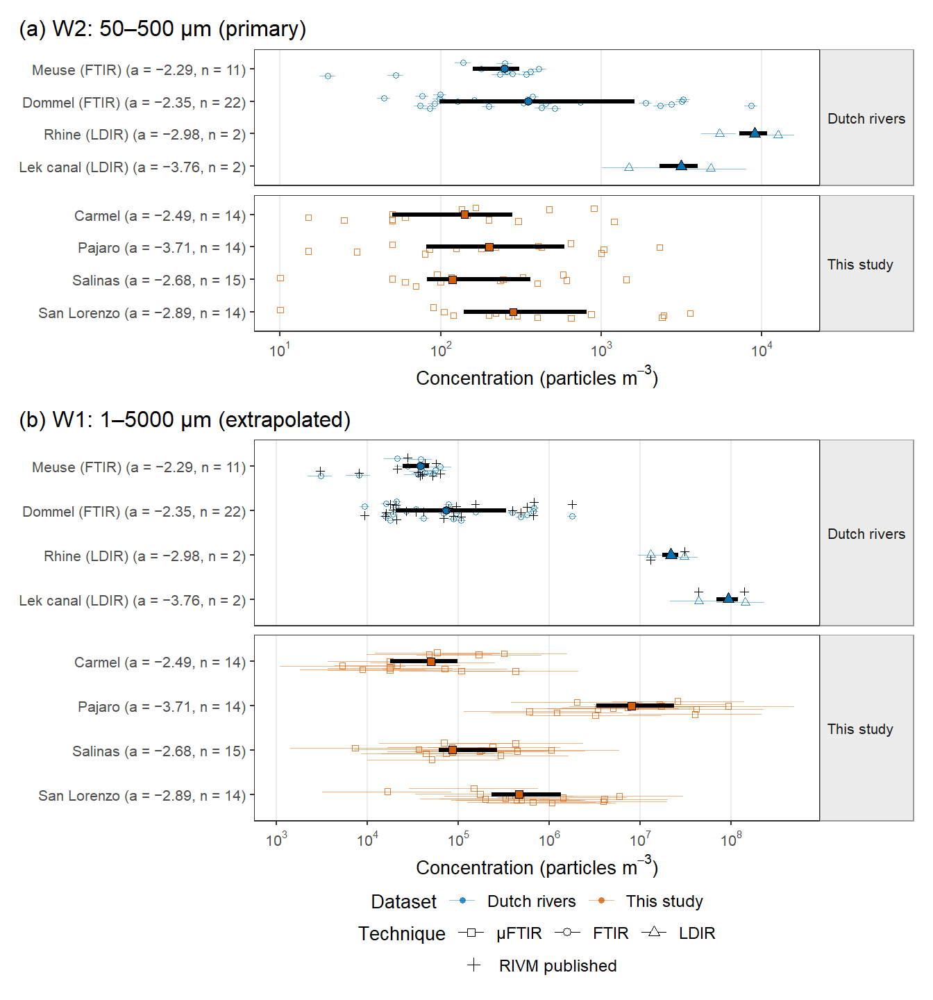
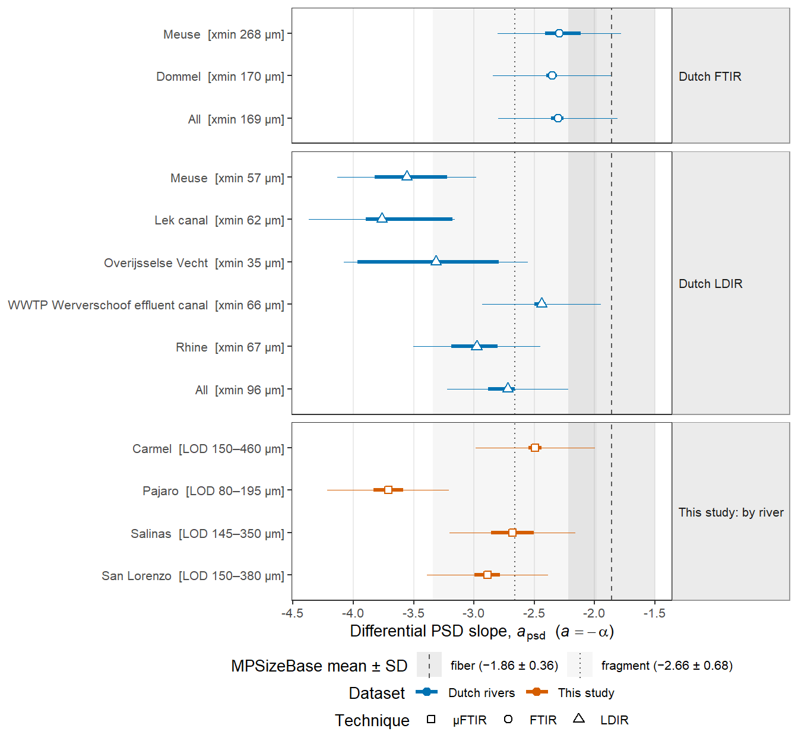
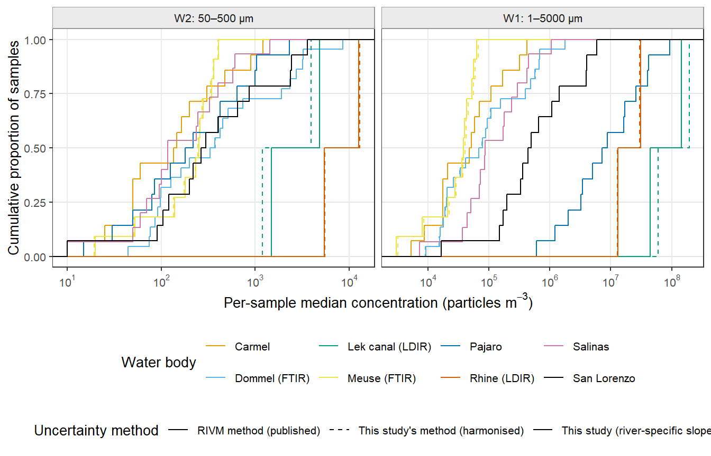
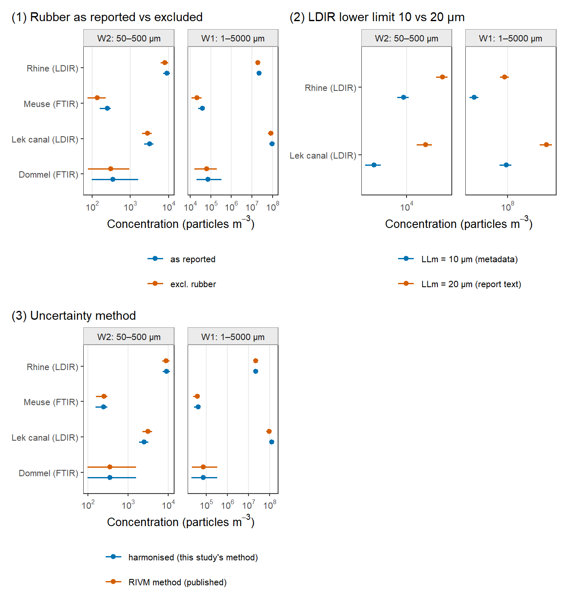
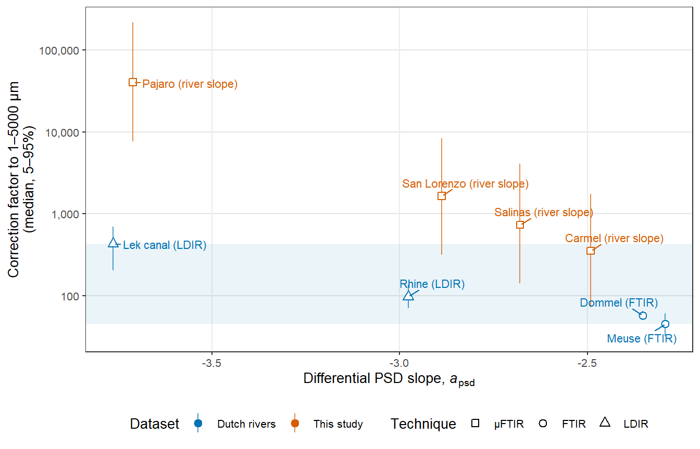

# Save the global RNG state so this section cannot perturb later chunks.
rivm_rng_state <- if (exists(".Random.seed", envir = globalenv())) get(".Random.seed", envir = globalenv()) else NULL
if (!exists("proj_root")) {
proj_root <- tryCatch(normalizePath(file.path(dirname(knitr::current_input(dir = TRUE)), "..")),
error = function(e) normalizePath("."))
}
if (!exists("correction_factor")) source(file.path(proj_root, "R", "mp_risk_utils.R"))
source(file.path(proj_root, "R", "rivm_utils.R"))
# Standalone render (quarto render R/rivm_benchmark.qmd): rebuild the pipeline
# objects this section needs from the main document's knitr cache.
if (!exists("cpsd_loc_shape_length")) {
rivm_bootstrap_pipeline_objects(proj_root)
}
rivm_L_meas_ours <- c(50, 500)
rivm_paths_ <- rivm_paths(proj_root)
rivm_hashes <- rivm_input_hashes(rivm_paths_)
rivm_pipeline_key <- digest::digest(list(
lapply(cpsd_loc_shape_length, function(x) x$all[c("a_psd", "se_a_psd")]),
monitoring$C_measured_pL, monitoring$sample_id,
rivm_L_meas_ours))13.4 Benchmark against Dutch river datasets (RIVM 2026-0069)
This section compares this study’s particle-length PSD slopes and rescaled concentrations with water-based (per-volume) Dutch river data compiled for RIVM letter report 2026-0069 (Quik et al. 2026; data and code: rivm-syso/MicroplasticsERA_water, EUPL-1.2). The Dutch concentrations come from Mintenig et al. (2020; Meuse and Dommel, FTIR), Mughini-Gras et al. (2021; Rhine at Lobith and Lek canal at Vianen, LDIR) and Mintenig, Hunnestad & Koelmans (2025; Dommel, FTIR). The Dutch slopes are RIVM’s published poweRlaw maximum-likelihood fits (param == "longest"), and they are used as published: no Dutch particle data are refitted here. All logic is in R/rivm_utils.R. This child document only orchestrates it, and it is self-contained: it saves and restores the global RNG state, so it does not change any upstream or downstream result.
Windows. W2 = 50–500 µm is the primary comparison: it is this study’s sieve window and lies inside both Dutch measured ranges (20–5000 µm FTIR; 10–500 µm LDIR), so it needs interior rescaling only. W1 = 1–5000 µm is the Koelmans et al. (2020) default and a long extrapolation for every dataset. Measured window for this study. Following RIVM’s treatment of the Dutch data (rescaling from the sampling limits LLm/ULm), this study’s concentrations are rescaled from the 50/500 µm sampling sieves (rivm_L_meas_ours). This is a benchmark-only setting and does not change the pipeline’s L_meas_min_use/L_meas_max_use (Section 5.1). Slopes for this study. Each river’s own C-PSD slope is used for both rescaled concentrations and slope comparisons, matching the pipeline default (slope_application).
rivm_inputs <- rivm_load_inputs(rivm_paths_)
rivm_ours_totals <- ours_sample_totals(monitoring)
rivm_river_fits <- lapply(cpsd_loc_shape_length, `[[`, "all")
rivm_samples_tbl <- run_rivm_benchmark(
rivm_inputs, rivm_ours_totals, river_fits = rivm_river_fits, n_rivm = 5000, n_mc = n_mc,
structural_sd = slope_structural_sd, L_meas_ours = rivm_L_meas_ours)
rivm_slopes_tbl <- rivm_slope_table(rivm_inputs$alphas, rivm_river_fits,
structural_sd = slope_structural_sd)
rivm_regression <- rivm_regression_check(rivm_samples_tbl)
rivm_pub_check <- rivm_published_vs_reconstructed(rivm_samples_tbl)# Tidy outputs. Every figure below re-renders from these CSVs.
rivm_out_dir <- file.path(proj_root, "data_output")
utils::write.csv(rivm_samples_tbl, file.path(rivm_out_dir, "rivm_benchmark_samples_v1.csv"), row.names = FALSE)
utils::write.csv(rivm_slopes_tbl, file.path(rivm_out_dir, "rivm_benchmark_slopes_v1.csv"), row.names = FALSE)
utils::write.csv(rivm_inputs$audit, file.path(rivm_out_dir, "rivm_benchmark_audit_v1.csv"), row.names = FALSE)
utils::write.csv(rivm_regression, file.path(rivm_out_dir, "rivm_benchmark_regression_check_v1.csv"), row.names = FALSE)
utils::write.csv(rivm_pub_check, file.path(rivm_out_dir, "rivm_benchmark_published_vs_reconstructed_v1.csv"), row.names = FALSE)
rivm_samples_csv <- tibble::as_tibble(utils::read.csv(file.path(rivm_out_dir, "rivm_benchmark_samples_v1.csv"), check.names = FALSE))
rivm_slopes_csv <- tibble::as_tibble(utils::read.csv(file.path(rivm_out_dir, "rivm_benchmark_slopes_v1.csv"), check.names = FALSE)) |>
dplyr::mutate(facet = factor(.data$facet, levels = c("Dutch FTIR", "Dutch LDIR", "This study: by river")))
rivm_groups_csv <- rivm_group_summary(rivm_samples_csv)
utils::write.csv(rivm_groups_csv, file.path(rivm_out_dir, "rivm_benchmark_groups_v1.csv"), row.names = FALSE)
rivm_si_tbl <- rivm_si_table(rivm_samples_csv, rivm_slopes_csv)
utils::write.csv(rivm_si_tbl, file.path(rivm_out_dir, "rivm_benchmark_si_table_v1.csv"), row.names = FALSE, fileEncoding = "UTF-8")
rivm_vals <- rivm_manuscript_values(rivm_samples_csv, rivm_groups_csv, rivm_slopes_csv)
utils::write.csv(rivm_vals, file.path(rivm_out_dir, "rivm_benchmark_text_values_v1.csv"), row.names = FALSE)
rivm_caps <- rivm_figure_captions(rivm_vals)
utils::write.csv(tibble::tibble(figure = names(rivm_caps), caption = unlist(rivm_caps)),
file.path(rivm_out_dir, "rivm_benchmark_captions_v1.csv"), row.names = FALSE, fileEncoding = "UTF-8")
rivm_rv <- function(k) rivm_vals$formatted[rivm_vals$key == k]
# Guards (Section 7 of the benchmark spec).
stopifnot(!any(rivm_samples_csv$water_type == "Effluent WWTP"),
!any(rivm_samples_csv$dataset == "Dutch rivers" & rivm_samples_csv$LLm >= 300),
!any(grepl("uerlein|Leslie", rivm_samples_csv$study)))
if (!all(rivm_regression$pass)) warning("RIVM benchmark: prototype regression targets not met; see rivm_benchmark_regression_check_v1.csv")
if (nrow(rivm_pub_check) && !all(rivm_pub_check$within_2x)) {
warning("RIVM published W1 medians differ from the reconstruction by more than 2x; review before use")
}Inputs and exclusions. Inputs were read from RIVM clone (rebuilt derived CSVs). In total, 37 Dutch surface-water samples were retained and 16 were excluded (table below): WWTP effluent; the nine Mintenig et al. (2020) samples analysed only above 300 µm, which have no total in Corrected_concentrations_total; and the four Mughini-Gras et al. (2021) samples without a reported total. Bäuerlein et al. (2022, 2023) particle data are not public. Their slopes appear in the slope comparison, but their samples are excluded from the concentration figures. For this study, the per-sample concentration is the sum over plastic polymer classes of the pipeline’s monitoring$C_measured_pL (57 samples, ×1000 to particles m⁻³).
knitr::kable(
rivm_inputs$audit |>
dplyr::count(.data$study, .data$river, .data$technique, .data$included, .data$exclusion_reason),
caption = "Dutch sample audit: inclusion status by study and water body")| study | river | technique | included | exclusion_reason | n |
|---|---|---|---|---|---|
| Mintenig et al. 2020 | Dommel | FTIR | FALSE | WWTP effluent (not surface water) | 2 |
| Mintenig et al. 2020 | Dommel | FTIR | TRUE | NA | 18 |
| Mintenig et al. 2020 | Meuse | FTIR | FALSE | LLm = 300 um (no total in Corrected_concentrations_total) | 7 |
| Mintenig et al. 2020 | Meuse | FTIR | FALSE | WWTP effluent (not surface water) | 1 |
| Mintenig et al. 2020 | Meuse | FTIR | FALSE | WWTP effluent (not surface water); LLm = 300 um (no total in Corrected_concentrations_total) | 2 |
| Mintenig et al. 2020 | Meuse | FTIR | TRUE | NA | 11 |
| Mintenig et al. 2025 | Dommel | FTIR | TRUE | NA | 4 |
| Mughini-Gras et al. 2021 | Lek canal | LDIR | FALSE | No total concentration reported | 2 |
| Mughini-Gras et al. 2021 | Lek canal | LDIR | TRUE | NA | 2 |
| Mughini-Gras et al. 2021 | Rhine | LDIR | FALSE | No total concentration reported | 2 |
| Mughini-Gras et al. 2021 | Rhine | LDIR | TRUE | NA | 2 |
Checks. The re-implementation of the RIVM uncertainty method reproduces the prototype regression targets, with all 8 water-body × window medians within ±10% (8 of 8 pass). RIVM’s own published W1 medians (Rescaled_concentrations_2026-05-13.Rds) agree with the reconstruction within a factor of 1.02.
knitr::kable(rivm_si_tbl, caption = "Included sample sets. a, differential slope (Dutch: RIVM bootstrap 95% CI; this study: ±1.96 SE). Rescaled values: median of per-sample medians [lowest per-sample 5th–highest per-sample 95th percentile], particles m⁻³; Dutch reconstructed with the RIVM method, this study river-specific C-PSD slope (W2 measured).")| Study | Water body | n | Technique | Measured range (µm) | a [95% CI] | Fit window | Reported (particles m⁻³) | W2 50–500 µm | W1 1–5000 µm |
|---|---|---|---|---|---|---|---|---|---|
| Mintenig et al. 2020 | Dommel | 18 | FTIR | 20–5000 | −2.35 [−2.40, −2.31] | xmin 170 µm | 160–12,000 | 180 [40–3,500] | 38,000 [8,200–7.6 × 10⁵] |
| Mintenig et al. 2020 | Meuse | 11 | FTIR | 20–5000 | −2.29 [−2.41, −2.11] | xmin 268 µm | 67–1,400 | 250 [18–460] | 39,000 [2,200–83,000] |
| Mintenig et al. 2025 | Dommel | 4 | FTIR | 20–5000 | −2.35 [−2.40, −2.31] | xmin 170 µm | 1,400–31,000 | 3,000 [340–9,400] | 6.2 × 10⁵ [69,000–2.0 × 10⁶] |
| Mughini-Gras et al. 2021 | Lek canal | 2 | LDIR | 10–500 | −3.76 [−3.89, −3.18] | xmin 62 µm | 1.0 × 10⁵–3.3 × 10⁵ | 3,200 [1,000–8,000] | 9.4 × 10⁷ [2.1 × 10⁷–2.3 × 10⁸] |
| Mughini-Gras et al. 2021 | Rhine | 2 | LDIR | 10–500 | −2.98 [−3.19, −2.80] | xmin 67 µm | 1.4 × 10⁵–3.1 × 10⁵ | 9,000 [4,200–16,000] | 2.2 × 10⁷ [9.5 × 10⁶–4.3 × 10⁷] |
| This study | Carmel | 14 | µFTIR | 50–500 | −2.49 [−2.55, −2.44] | LOD 150–460 µm | 15–1,200 | 140 [15–1,200] | 50,000 [1,100–2.1 × 10⁶] |
| This study | Pajaro | 14 | µFTIR | 50–500 | −3.71 [−3.83, −3.59] | LOD 80–195 µm | 15–2,300 | 200 [15–2,300] | 8.1 × 10⁶ [1.1 × 10⁵–5.0 × 10⁸] |
| This study | Salinas | 15 | µFTIR | 50–500 | −2.68 [−2.86, −2.50] | LOD 145–350 µm | 10–1,400 | 120 [10–1,400] | 86,000 [1,400–5.9 × 10⁶] |
| This study | San Lorenzo | 14 | µFTIR | 50–500 | −2.89 [−2.99, −2.78] | LOD 150–380 µm | 10–3,600 | 280 [10–3,600] | 4.7 × 10⁵ [3,200–3.0 × 10⁷] |
knitr::kable(rivm_regression, digits = 3, caption = "Prototype regression check (median across samples of per-sample medians, particles m⁻³)")| group | window | target | n_target | n | median | rel_diff | pass |
|---|---|---|---|---|---|---|---|
| Meuse (FTIR) | W2 | 251 | 11 | 11 | 251.113 | 0.000 | TRUE |
| Dommel (FTIR) | W2 | 181 | 18 | 18 | 180.644 | -0.002 | TRUE |
| Rhine (LDIR) | W2 | 9079 | 2 | 2 | 9043.611 | -0.004 | TRUE |
| Lek canal (LDIR) | W2 | 3160 | 2 | 2 | 3152.576 | -0.002 | TRUE |
| Meuse (FTIR) | W1 | 38700 | 11 | 11 | 38599.195 | -0.003 | TRUE |
| Dommel (FTIR) | W1 | 37700 | 18 | 18 | 37703.684 | 0.000 | TRUE |
| Rhine (LDIR) | W1 | 21900000 | 2 | 2 | 21918301.938 | 0.001 | TRUE |
| Lek canal (LDIR) | W1 | 93700000 | 2 | 2 | 93993738.310 | 0.003 | TRUE |
knitr::kable(rivm_pub_check, digits = 3, caption = "RIVM published vs reconstructed W1 medians (particles m⁻³)")| group | n | reconstructed | rivm_published | ratio | within_2x |
|---|---|---|---|---|---|
| Dommel (FTIR) | 22 | 73573.18 | 73543.97 | 1.000 | TRUE |
| Lek canal (LDIR) | 2 | 93993738.31 | 92461693.24 | 0.984 | TRUE |
| Meuse (FTIR) | 11 | 38599.19 | 38049.88 | 0.986 | TRUE |
| Rhine (LDIR) | 2 | 21918301.94 | 21902355.64 | 0.999 | TRUE |
Results. Rescaled to the common 50–500 µm window (W2), the Dutch water-body medians were 250 (IQR 160–310; n = 11) (Meuse, FTIR), 350 (IQR 98–1,600; n = 22) (Dommel, FTIR), 9,000 (range 5,500–13,000; n = 2) (Rhine, LDIR) and 3,200 (range 1,500–4,800; n = 2) (Lek canal, LDIR) particles m⁻³. This study’s measured median was 200 (IQR 80–480; n = 57) particles m⁻³. Extrapolated to 1–5000 µm (W1), this study’s median with river-specific slopes is 3.2 × 10⁵ (IQR 70,000–2.0 × 10⁶; n = 57). W1 is secondary to the W2 comparison because it is a long extrapolation.
rivm_fig7 <- plot_rivm_fig7(rivm_samples_csv)
save_rivm_figure(rivm_fig7, "rivm_fig7_concentrations", width = 7, height = 7.5,
data = dplyr::filter(rivm_samples_csv, .data$scenario == "primary",
.data$method_variant %in% c("published", "published_rivm", "river")),
dir = file.path(proj_root, "figures"))
rivm_fig7
Slopes: this study’s river-level slopes have a median of −2.78 (IQR −3.09 to −2.63; n = 4). The Dutch water-based water-body slopes have a median of −2.32 (range −2.35 to −2.29; n = 2) (FTIR) and −3.31 (IQR −3.56 to −2.98; n = 5) (LDIR). LDIR slopes are systematically steeper than FTIR slopes, and the Dutch FTIR slopes were fitted above xmin ≈ 170–270 µm.
rivm_fig8 <- plot_rivm_fig8(rivm_slopes_csv)
save_rivm_figure(rivm_fig8, "rivm_fig8_slopes", width = 7, height = 6.5, data = rivm_slopes_csv,
dir = file.path(proj_root, "figures"))
rivm_fig8
rivm_figSA <- plot_rivm_ecdf(rivm_samples_csv)
save_rivm_figure(rivm_figSA, "rivm_figSA_ecdf", width = 7, height = 4.5,
data = dplyr::filter(rivm_samples_csv, .data$scenario == "primary",
.data$method_variant %in% c("published", "harmonised", "river")),
dir = file.path(proj_root, "figures"))
rivm_figSA
rivm_figSB <- plot_rivm_sensitivity(rivm_groups_csv)
save_rivm_figure(rivm_figSB, "rivm_figSB_sensitivity", width = 7, height = 7.5, data = rivm_groups_csv,
dir = file.path(proj_root, "figures"))
rivm_figSB
rivm_figSC <- plot_rivm_cf_alpha(rivm_samples_csv)
save_rivm_figure(rivm_figSC, "rivm_figSC_cf_vs_slope", width = 7, height = 4.5,
data = dplyr::filter(rivm_samples_csv, .data$window == "W1", .data$scenario == "primary",
.data$method_variant %in% c("published", "river")),
dir = file.path(proj_root, "figures"))
rivm_figSC
Caveats. (1) Slopes are method-dependent, so W1 differences conflate PSD shape with fitting method. (2) Dutch FTIR slopes were fitted above xmin ≈ 170–270 µm but are applied down to 20 µm. (3) LDIR and FTIR slopes differ systematically (α ≈ 2.4–3.8 versus 2.3–2.4). (4) Dutch concentrations are study-reported totals, not recomputed from particles. (5) This study’s samples are discrete pumped samples from small, episodic rivers; the Dutch samples come from large perennial rivers. (6) W2 is the primary comparison and W1 is secondary.
if (!is.null(rivm_rng_state)) assign(".Random.seed", rivm_rng_state, envir = globalenv())